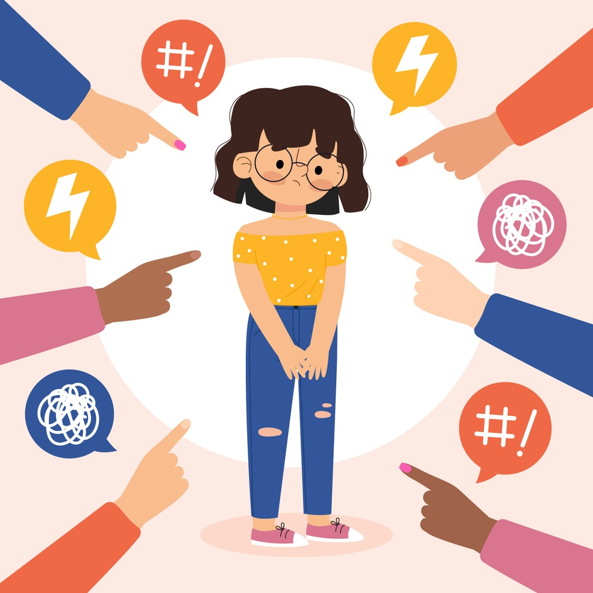
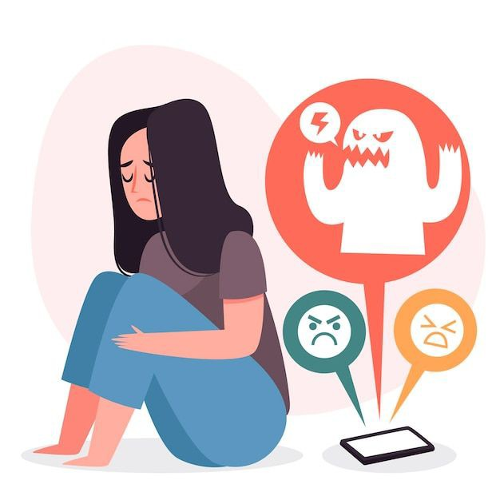
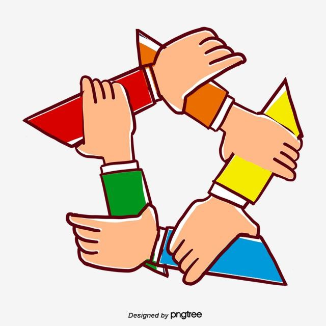

O bullying é um comportamento repetitivo de agressão, intimidação ou humilhação praticado por um indivíduo ou grupo em relação a uma pessoa vulnerável.
Envolve agressões físicas diretas, como socos, pontapés, empurrões, entre outros. Pode causar lesões físicas e emocionais graves na vítima.
É caracterizado por comportamentos que visam prejudicar a saúde mental e emocional da vítima, como insultos, ameaças, exclusão social, disseminação de rumores e chantagem emocional.
Bullying Social Também conhecido como bullying relacional, envolve a exclusão deliberada da vítima de grupos sociais, a disseminação de boatos, a manipulação de amizades e outras formas de isolamento social, causando danos emocionais e psicológicos significativos.
O cyberbullying é um problema sério que ocorre quando alguém é alvo de assédio, intimidação, ameaças ou difamação online. Isso pode ter sérias consequências emocionais e psicológicas para as vítimas. É importante denunciar e combater esse comportamento, promovendo um ambiente online seguro e respeitoso.
O bullying pode causar danos emocionais sérios nas vítimas, como baixa autoestima, ansiedade e depressão. Além disso, pode levar a problemas de saúde mental e até mesmo ao suicídio em casos extremos
Uma maneira eficaz de prevenir o bullying é promover a educação e a conscientização desde cedo, ensinando as crianças sobre empatia, respeito e tolerância
Outra maneira importante de prevenir o bullying é através do envolvimento dos pais e responsáveis. Os adultos devem estar atentos aos sinais de bullying e fornecer um ambiente seguro e solidário para as crianças expressarem seus sentimentos e preocupações.
